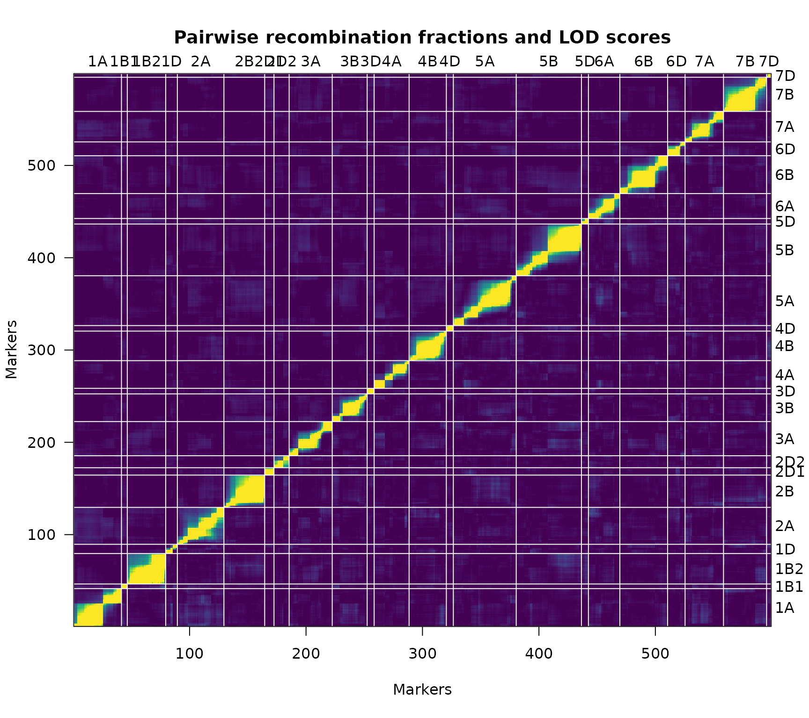
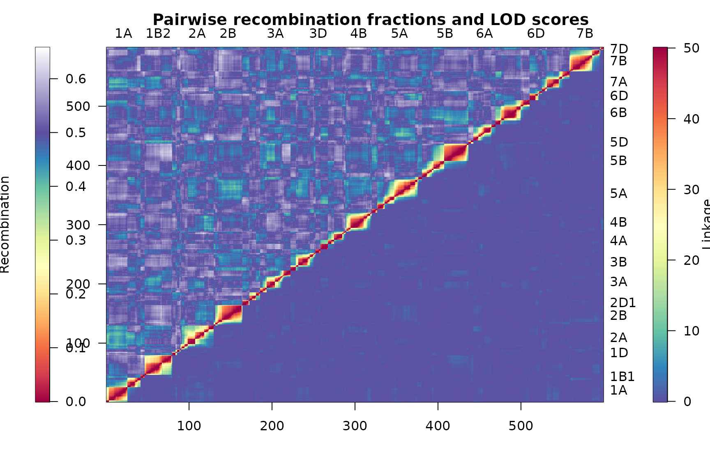
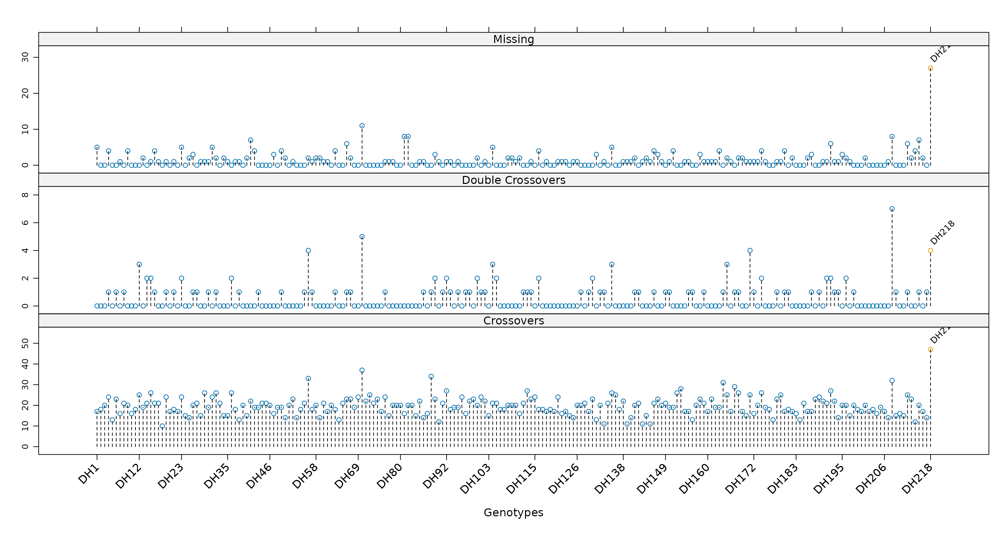
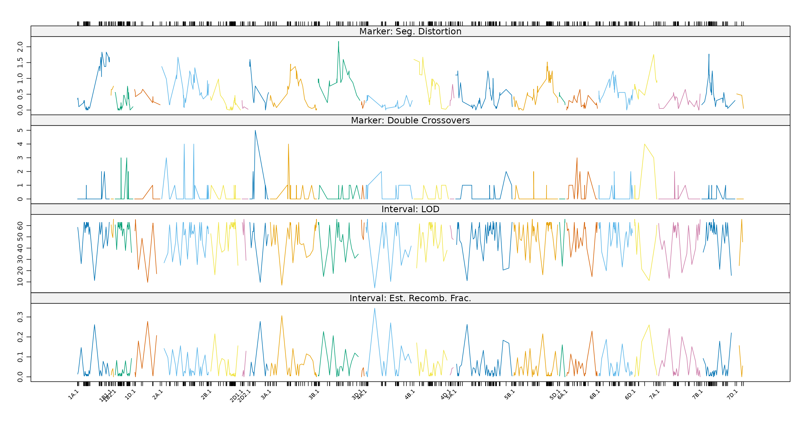
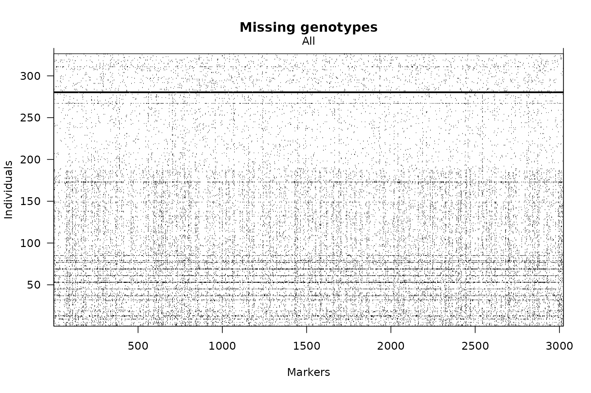
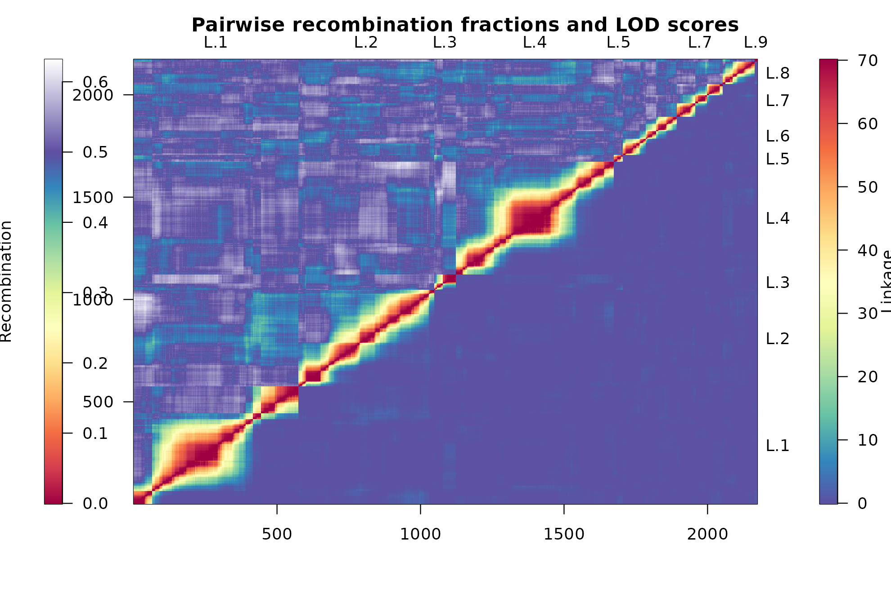
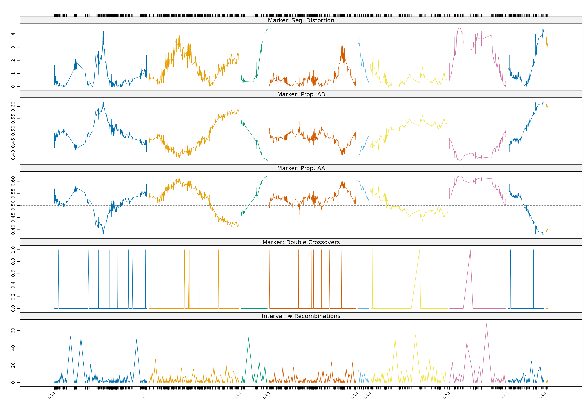
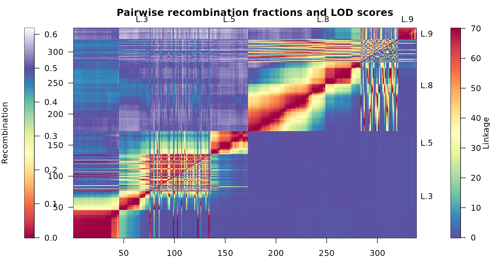
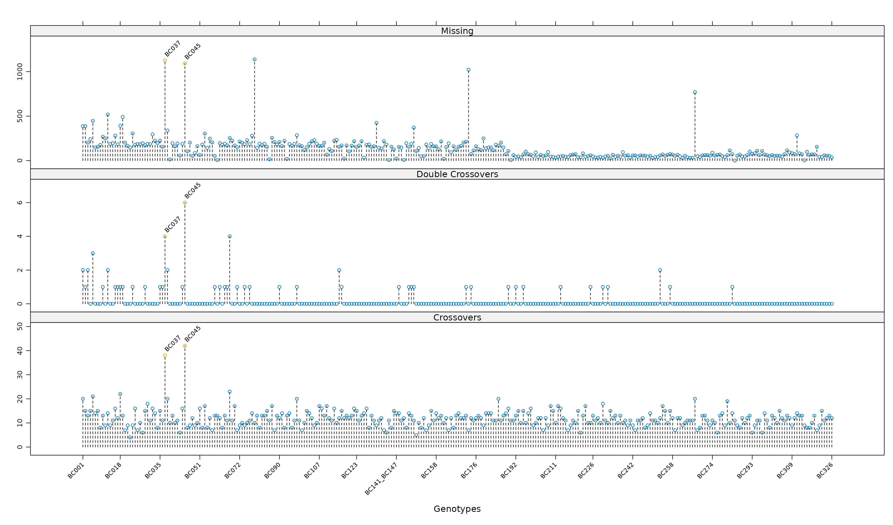
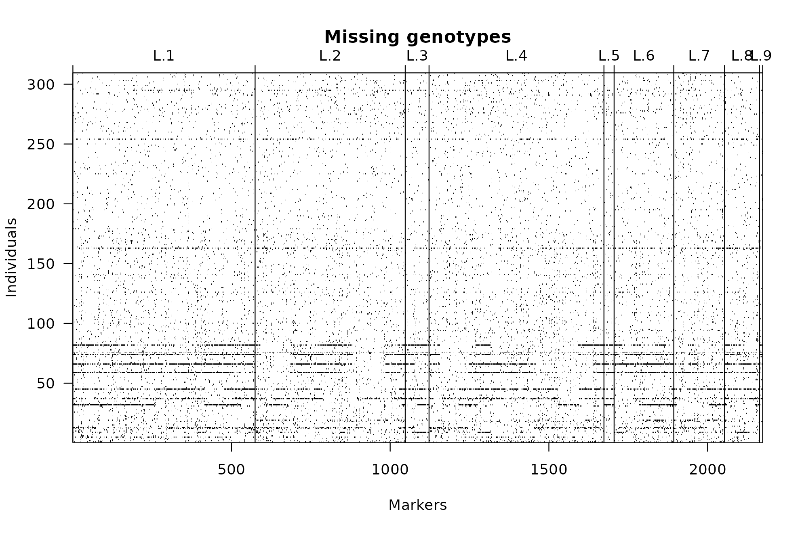

Efficient linkage map construction using R/ASMap
Julian Taylor and David Butler
Source:vignettes/articles/asmapvignette.Rmd
asmapvignette.RmdIntroduction
Background
Genetic linkage maps are widely used in the biological research community to explore the underlying DNA of populations. They generally consist of a set of polymorphic genetic markers spanning the entire genome of a population generated from a specific cross of parental lines. This exploration may involve the dissection of the linkage map itself to understand the genetic landscape of the population or, more commonly, it is used to conduct gene-trait associations such as quantitative trait loci (QTL) analysis or genomic selection (GS). For QTL analysis, the interpretation of significant genomic locations is enhanced if the linkage map contains markers that have been assigned and optimally ordered within chromosomal groups. This can be achieved algorithmically by using linkage map construction techniques that utilise assumptions of Mendelian genetics.
In the R statistical computing environment (R Development Core Team 2014) there is only a handful of packages that can perform linkage map construction. A popular package is the linkage map construction and QTL analysis package R/qtl (Broman and Wu 2014). Since its inception in late 2001 it has grown considerably and incorporates functionality for a wide set of populations. These include a simple Backcross (BC), Doubled Haploid (DH), intercrossed F2 (F2) and 4-way crosses. More recently, the authors have added functionality for additional populations generated from advanced Recombinant Inbred Lines (RIL) as well as populations generated from multiple backcrossing and selfing processes. The package offers an almost complete set of tools to construct, explore and manipulate genetic linkage maps for each population. To complement the package the authors have also publihed a comptrehensive book (Broman and Sen 2009). A more recent available addition to the contributed package list in R is R/onemap (Margarido and Mollinari 2014). This package provides a suite of tools for genetic linkage map construction for BC, DH and RIL inbred populations and also has functionality for outcrossing populations.
Both packages contain functions that perform moderately well at clustering markers into homogeneous linkage groups. Unfortunately, the functions in R/qtl and R/onemap used to perform optimal marker ordering within linkage groups are tediously slow. In both packages there are functions that compute initial orders using non-exhaustive methods such as SERIATION (Buetow and Chakravarti 1987) and RECORD (Van Os et al. 2005). As these methods may not return an optimal order, a second stage antiquated brute force approach is used that checks all order combinations within a marker window. This is known throughout the linkage map construction community as “rippling”. For linkage groups with large numbers of markers and a moderate sized window (eight markers), rippling can be very computationally cumbersome and also may need to be performed several times before an optimal order is reached.
In an attempt to circumvent these computational issues the R/ASMap package was developed (Taylor and Butler 2014). The package contains linkage map construction functions that utilise the MSTmap algorithm derived in (Wu 2008) and computationally implemented as C++ source code freely available at http://alumni.cs.ucr.edu/~yonghui/mstmap.html. The algorithm uses the minimum spanning tree of a graph (Cheriton and Tarjan 1976) to cluster markers into linkage groups as well as find the optimal marker order within each linkage group in a very computationally efficient manner. In contrast to R/qtl and R/onemap, genetic linkage maps are constructed using a one-stage approach. The algorithm is restricted to linkage map construction with Backcross (BC), Doubled Haploid (DH) and Recombinant Inbred (RIL) populations. For RIL populations, the level of self pollination can also be given and consequently the algorithm can handle selfed F2, F3, , Fn populations where is the level of selfing. Advanced RIL populations are also allowed as they are treated like a bi-parental for the purpose of linkage map construction.
The R/ASMap package uses an R/qtl format for the structure of its genetic objects. Once the class of the object is appropriately set, both R/ASMap and R/qtl functions can be used synergistically to construct, explore and manipulate the object. To complement the efficient MSTmap linkage map construction functions the R/ASMap package also contains a function that “pulls” markers of different types from the linkage map and places them aside. A complementary “push” function also exists to push the markers back to linkage groups ready for construction or reconstruction. There are also several numerical and graphical diagnostic tools to efficiently check the quality of the constructed map. This includes the ability to simultaneously graphically display multiple panel profiles of linkage map statistics for the set of genotypes used. Additionally, profile marker/interval statistics can be simultaneously displayed for the entire genome or subsetted to pre-defined linkage groups. In tandem, these fast graphical diagnostic tools and efficient linkage map construction assist in providing a rapid turnaround time in linkage map construction and diagnosis.
The vignette is set out in chapters. The final section of the introduction provides a brief technical explanation of the components of the MSTmap algorithm. In the second chapter the functions of R/ASMap are discussed in detail and examples are provided, where appropriate, using a data set integrated into the package. Chapter 3 contains a completely worked example of a barley Backcross population including pre-construction diagnostics, linkage map construction, and post-construction diagnostics using the available R/ASMap functions. The chapter also discusses how R/ASMap can be used for post construction linkage map improvement through techniques such as fine mapping or combining linkage maps. The last chapter presents some additional useful information on aspects of the MSTmap algorithm learnt through detailed exploration of the linkage map construction functions in this package.
MSTmap
It is important to understand some of the technical features of the MSTmap algorithm as they are contained in the two linkage map construction functions that are available with the R/ASMap package.
Following the notation of (Wu 2008) consider a Doubled Haploid population of individuals genotyped across a set of markers where each th entry of the matrix is either an or a representing the two parental homozygotes in the population. Let be the probability of a recombination event between the markers where . MSTmap uses two possible weight objective functions based on recombination probabilities between the markers In general is not known and so it is replaced by an estimate, where corresponds to the hamming distance between and (the number of non-mathcing alleles between the two markers). This estimate, , is also the maximum likelihood estimate for for the two weight functions defined above.
Clustering
If markers and belong to two different linkage groups then and the hamming distance between them has the property . A simple thresholding mechanism to determine whether markers belong to the same linkage group can be calculated using Hoeffdings inequality, $$$$ for . For a given and , the equation is solved to determine an appropriate hamming distance threshold, . (Wu 2008) indicate that the choice of is not crucial when attempting to form linkage groups. However, the equation that requires solving is highly dependent on the number of individuals in the population. For example, for a DH populationm, the figure below shows the profiles of the against the number of individuals in the population for four threshold minimum cM distances . MSTmap uses a default of which would work universally well for population sizes of . For larger numbers of individuals, for example 350, the plot indicates an to would use a conservative minimum threshold of 30-35 cM before linking markers between clusters. If the default is given in this instance this threshold is dropped to cM and consequently distinct clusters of markers will appear linked. For this reason, the figure below should always initially be checked before linkage map construction to ensure an appropriate p-value is given to the MSTmap algorithm.
To cluster the markers MSTmap uses an edge-weighted undirected complete graph, for where the individual markers are vertices and the edges between any two markers and is the pairwise hamming distance . Edges with weights greater than are then removed. The remaining connected components allow the marker set to be partitioned into linkage groups, .

Negative log10 $$ versus the number of genotypes in the population for four threshold cM distances.
Marker Ordering
For simplicity, consider the matrix of markers belongs to the same linkage group. Preceding marker ordering, the markers are “binned” into groups where, within each group, the pairwise distance between any two markers is zero. The markers within each group have no recombinations between them and are said to be co-locating at the same genomic location for the genotypes used to construct the linkage map. A representative marker is then chosen from each of the bins and used to form the reduced marker set .
For the reduced matrix , consider the complete set of entries for either weight function (1) or (2). These complete set of entries can be viewed as the upper triangle of a symmetric weight matrix . MSTmap views all these entries as being connected edges in an undirected graph where the individual markers are vertices. A marker order for the set , also known as a travelling salesman path (TSP), can be determined by visiting each marker once and summing the weights from the connected edges. To find a minimum weight (TSP), MSTmap uses a minimum spanning tree (MST) algorithm (Cheriton and Tarjan 1976), such as Prims algorithm (Prim 1957). If the TSP is unique then the MST is the correct order for the markers. For cases where the data contains genotyping errors or lower numbers of individuals the MST may not be a complete path and contain markers or small sets of markers as individual nodes connected to the path. In these cases, MSTmap uses the longest path in the MST as the backbone and employs several efficient local optimization techniques such as K-opt, node-relocation and block-optimize (see Wu 2008) to improve the current minimum TSP. By integrating these local optimization techniques into the algorithm, MSTmap provides users with a true one stage marker ordering algorithm.
One excellent feature of the MSTmap algorithm is the utilisation of an EM type algorithm for the imputation of missing allele scores that is tightly integrated with the ordering algorithm for the markers. To achieve this the marker matrix is converted to a matrix, , where the entries represent the probabilistic certainty of the allele being A. For the th marker and th individual then where and are estimated recombination fractions between the th and th marker and th and th marker respectively. The equation on the right hand side is the posterior probability of the missing value in marker being the A allele for genotype given the current estimate. The ordering algorithm begins by initially calculating pairwise normalized distances between all markers in and deriving an initial weight matrix, . An undirected graph is formed using the markers as vertices and the upper triangular entries of as connected edges. An MST of the undirected graph is then found to establish an initial order for the markers of the linkage group. For the current order at the th markers the E-step of algorithm requires updating the missing observation at marker by updating the estimates and in (4). The M-step then re-estimates the pairwise distances between all markers in where, for the th and th marker, is and the weight matrix is recalculated. An undirected graph is formed with the markers as vertices and the upper triangular entries of as connected edges. A new order of the markers is derived by obtaining an MST of the undirected graph and the algorithm is repeated to convergence. Although this requires several iterations to converge, the computational time for the ordering algorithm remains expedient. However, an increase in the number of missing values will increase computation time.
If required, the MSTmap algorithm also detects and removes genotyping errors as well as integrates this process into the ordering algorithm. The technique involves using a weighted average of nearby markers to determine the expected state of the allele. For individual and marker the expected value of the allele is calculated using In this equation the weights are the inverse square of the distance from marker to its nearby markers. MSTmap only uses a small set of nearby markers during each iteration and the observed allele is considered suspicious if . If an observation is detected as suspicious it is treated as missing and imputed using the EM algorithm discussed previously. The removal of the suspicious allele has the effect of reducing the number of recombinations between the marker containing the suspicious observation and the neighbouring markers. This has an influential effect on the genetic distance between markers and the overall length of the linkage group.
The complete algorithm used to initially cluster the markers into linkage groups and optimally order markers within each linkage group, including imputing missing alleles and error detection, is known as the MSTmap algorithm.
A closer look at R/ASMap functions
This chapter explores the R/ASMap functions in greater depth and shows how they can be used to efficiently explore, manipulate and construct genetic linkage maps. It will also showcase the graphical tools that will allow efficient diagnosis of linkage map problems post construction.
The package contains multiple data sets listed as follows
- mapDH
-
: A constructed genetic linkage map for a Doubled Haploid population in the form of an R/qtl object. The genetic linkage map contains a total of 599 markers spanning 23 linkage groups genotyped across 218 individuals. The linkage map contains a small set of co-located markers and a small set of markers with excessive segregation distortion
- mapDHf
-
: An unconstructed version of
mapDHin the form a data frame. The data frame has dimensions 599 218 and the rows (markers) have been randomized. - mapBCu
-
: An unconstructed set of markers for a backcross population in the form of an R/qtl object. The marker set contains a total of 3023 markers genotyped on 326 individuals. This marker set can be used in conjunction with the detailed process presented in chapter to construct a genetic linkage map.
- mapBC
-
: A constructed linkage map of
mapBCuin the form of an R/qtl object. The linkage map contains a total of 3019 markers genotyped on 300 individuals. - mapF2
-
: A simulated linkage map for a self-pollinated F2 population consisting of 700 markers spanning 7 linkage groups genotyped across 250 individuals.
Each of these data sets is accessible using commands similar to
Map construction functions
The R/ASMap package contains two linkage map construction functions
that allow users to fully utilize the MSTmap parameters listed at http://alumni.cs.ucr.edu/~yonghui/mstmap.html. Some
additional information on aspects of the MSTmap algorithm and the
appropriate use of the arguments mvest.bc and
detectBadData is given in Chapter .
mstmap.data.frame()
The first of these functions allows users to input a data frame of
genetic markers ready for construction. For a more detailed explanation
of the arguments users should consult the help documentation found by
typing ?mstmap.data.frame in R.
mstmap.data.frame(object, pop.type = "DH", dist.fun = "kosambi",
objective.fun = "COUNT", p.value = 1e-06, noMap.dist = 15,
noMap.size = 0, miss.thresh = 1, mvest.bc = FALSE, detectBadData = FALSE,
as.cross = TRUE, return.imputed = TRUE, trace = FALSE, ...)The explicit form of the data frame object is borne from
the syntax of the marker file required for using the stand alone MSTmap
software. It must have markers in rows and genotypes in columns. Marker
names are required to be in the rownames component of the
object with genotype names residing in the names. Spaces in
any of the marker or genotype names should be avoided but will be
replaced with a “-” if found. Each of the columns of the data frame must
be of class "character" (not factors). If converting from a
matrix, this can easily be achieved by using the
stringAsFactors = FALSE argument for any
data.frame method.
The available populations that can be passed to pop.type
are "BC" Backcross, "DH" Doubled Haploid,
"ARIL" Advanced Recombinant Inbred and "RILn"
Recombinant Inbred with n levels of selfing. The allelic content of the
markers in the object must be explicitly adhered to. For
pop.type "BC", "DH" or
"ARIL" the two allele types should be represented as
("A" or "a") and ("B" or
"b"). Thus for pop.type = "ARIL" it is assumed
the minimal number of heterozygotes have been set to missing. For
non-advanced RIL populations (pop.type = "RILn") phase
unknown heterozygotes should be represented as "X". For all
populations, missing marker scores should be represented as
("U" or "-").
Users need to be aware that the p.value argument plays
an important role in determining the clustering of markers to distinct
linkage groups. Section Clustering shows the separation of marker groups
is highly dependent on the the number of individuals in the population.
For this reason, some trial and error may be required to determine an
appropriate p.value for the linkage map being
constructed.
Although this function contains arguments that utilize the complete
set of available MSTmap parameters it is less flexible than its sister
function mstmap.cross() (see section textttmstmap.cross())
that uses the flexible structure of an R/qtl "cross"
object. For this reason, it is recommended that users set
as.cross = TRUE to ensure the constructed object is
returned as a R/qtl cross object with an appropriate class structure.
For population types "BC" and "DH" the class
of the constructed object is given "bc" and
"dh" respectively. For "RILn" the
qtl package conversion function
convert2bcsft is used to ensure the class of the object is
assigned "bcsft" with arguments F.gen = n and
BC.gen = 0. For "ARIL" populations the
constructed object is given the class "riself". The correct
assignation of these classes ensures the objects can be used
synergistically with the suite of functions available in the R/qtl
package as well as other functions in the R/ASMap package.
The R/ASMap package contains an unconstructed Doubled Haploid marker
set mapDHf with 599 markers genotyped across 218
individuals. The marker set is formatted correctly for input into the
mstmap.data.frame() function.
L1 L2 L3 L4 L5 L6 L7 L8 L9 L10 L11 L12 L13 L14 L15 L16 L17 L18 L19 L20
56 54 35 41 4 37 6 30 40 27 37 13 15 10 21 6 32 33 33 41
L21 L22 L23 L24
6 9 5 8
chrlen(testd) L1 L2 L3 L4 L5 L6 L7
142.806369 181.935011 97.376797 115.405242 21.660902 108.162200 13.256931
L8 L9 L10 L11 L12 L13 L14
133.885978 153.235513 98.705941 145.839837 60.441336 72.211612 81.224002
L15 L16 L17 L18 L19 L20 L21
98.211685 8.738474 109.472813 60.913640 134.491476 103.954898 18.019891
L22 L23 L24
7.801089 7.810474 19.196583 As as.cross = TRUE the usual functions available in the
R/qtl package are available for use on the returned object.
mstmap.cross()
The second linkage map construction function allows users to input an
unconstructed or constructed linkage map in the form of an R/qtl cross
object. See ?mstmap.cross for a more detailed
description.
mstmap.cross(object, chr, id = "Genotype", bychr = TRUE,
suffix = "numeric", anchor = FALSE, dist.fun = "kosambi",
objective.fun = "COUNT", p.value = 1e-06, noMap.dist = 15,
noMap.size = 0, miss.thresh = 1, mvest.bc = FALSE, detectBadData =
FALSE, return.imputed = FALSE, trace = FALSE, ...)The cross object needs to inherit from one of the
allowable classes available in the R/qtl package, namely
"bc","dh","riself","bcsft" where "bc" is a
Backcross "dh" is Doubled Haploid, "riself" is
an advanced Recombinant Inbred and "bcsft" is a
Backcross/Self.
It is important to understand how these classes are encoded into the
object for the specific populations. If read.cross() is
used to read in any bi-parental populations it will be given the class
"bc". Doubled Haploid populations can be changed to
"dh" just by changing the class. For the purpose of linkage
map construction, both classes "bc" and "dh"
will produce equivalent results. For non-advanced Recombinant Inbred
populations markers are required to be fully informative (i.e. contain 3
distinct allele types such as AA, BB for parental homozygotes and AB for
phase unknown heterozygotes) and the use of read.cross()
will result in the cross object being given a class "f2".
The level of selfing is required to be encoded into the object by
applying one of the two conversion functions available in the R/qtl
package. For a population that has been generated by selfing
times, the conversion function convertbcsft can be used by
setting the arguments F.gen = n and
BC.gen = 0. This will attach a class "bcsft"
to the object. Populations that are genuine advanced RILs can be
converted using the convert2riself function. This function
will replace any remaining heterozygosity, if it exists, with missing
values and attach the class "riself" to the object.
Similar to the mstmap.data.frame() function, users need
to be aware that the p.value argument is highly dependent
on the number of individuals in the population and may require some
trial and error to ascertain an appropriate value. After construction
the cross object is returned with an identical class structure as the
inputted object. All R/qtl and R/ASMap package functions can be used
synergistically with this object.
Examples
The constructed linkage map mapDH available in the
R/ASMap package will be used to showcase the flexibility of this
function. Before attempting re-construction, some preliminary output of
mapDH is presented.
nmar(mapDH) 1A 1B1 1B2 1D 2A 2B 2D1 2D2 3A 3B 3D 4A 4B 4D 5A 5B 5D 6A 6B 6D
41 5 33 10 40 35 8 13 37 30 6 30 32 6 54 56 6 27 41 15
7A 7B 7D
33 37 4
pull.map(mapDH)[[4]] 1D.m.1 1D.m.2 1D.m.3 1D.m.4 1D.m.5 1D.m.6 1D.m.7 1D.m.8
0.000000 2.285816 2.742698 2.742698 21.465574 25.652893 57.200980 58.104090
1D.m.9 1D.m.10
58.568087 81.061896
attr(,"class")
[1] "A"The output shows that there are 23 groups that have been appropriately been assigned linkage group or chromosome names. The markers within each linkage group have been named according to the order of the markers.
Example 1: Completely construct or reconstruct a linkage map.
To completely re-construct this map set the argument
bychr = FALSE. This will bulk the genetic data from all
linkage groups, re-cluster the markers into groups and then optimally
order the markers within each linkage group. This linkage map is small
so these two tasks happen almost instantaneously.
L.1 L.10 L.11 L.12 L.13 L.14 L.15 L.16 L.17 L.18 L.19 L.2 L.20 L.21 L.22 L.23
41 30 6 9 21 32 6 54 56 6 27 5 41 15 33 37
L.24 L.3 L.4 L.5 L.6 L.7 L.8 L.9
4 33 10 40 35 8 13 37
pull.map(mapDHa)[[4]] 4A.m.9 4A.m.7 4A.m.8 4A.m.6 4A.m.5 4A.m.3 4A.m.4 4A.m.2
0.000000 1.835687 1.835687 2.294415 2.753144 3.670678 4.129406 6.424595
4A.m.1
7.801089
attr(,"class")
[1] "A"The reconstructed map contains 24 linkage groups with the extra linkage group coming from a minor split in 4A. As the linkage map is constructed from scratch, it assumed that former linkage group names are no longer required. A standard “L.” prefix is provided for the new linkage group names. This example also indicates that MSTmap by default does not respect the inputted marker order.
Example 2: Optimally order markers within linkage groups of an established map.
It may be necessary to only perform marker ordering within already
established linkage groups. This can be achieved by setting
bychr = TRUE. In some cases it also be preferable to ensure
the marker orders of the linkage groups are respected and this can be
achieved by setting anchor = TRUE.
mapDHb <- mstmap(mapDH, bychr = TRUE, dist.fun = "kosambi", anchor = TRUE, trace = TRUE)
nmar(mapDHb) 1A 1B1 1B2 1D 2A 2B 2D1 2D2 3A 3B 3D 4A.1 4A.2 4B 4D 5A
41 5 33 10 40 35 8 13 37 30 6 9 21 32 6 54
5B 5D 6A 6B 6D 7A 7B 7D
56 6 27 41 15 33 37 4 This map is identical to mapDH with the exception that
chromosome 4A has been split into two linkage groups. As
bychr = TRUE the function understands the origin of the
linkage group was 4A and consequently uses it as a prefix in the naming
of the two new linkage groups.
Example 3: Optimally order markers within linkage groups of an established map without breaking linkage groups.
The splitting of the linkage groups in the last example only occurred
due to choice of default p.value = 1e-06 set in the
function. A slight change to this p.value will ensure that
4A remains linked during the algorithm.
mapDHc <- mstmap(mapDH, bychr = TRUE, dist.fun = "kosambi", anchor = TRUE, trace = TRUE, p.value = 1e-04)
nmar(mapDHc) 1A 1B1 1B2 1D 2A 2B 2D1 2D2 3A 3B 3D 4A 4B 4D 5A 5B 5D 6A 6B 6D
41 5 33 10 40 35 8 13 37 30 6 30 32 6 54 56 6 27 41 15
7A 7B 7D
33 37 4 An identical result can be achieved by setting
p.value = 2 or any number greater than 1. Doing this
instructs the MSTmap algorithm to not split linkage groups regardless of
how weak the linkages are between markers within any group. Users should
be aware that if this latter method is used then linkage groups that
contain groups of markers separated by a substantial distance (i.e. very
weak linkages) may suffer from local orientation problems.
Example 4: Reconstruct map within predefined linkage groups of an established map.
There may only be a need to reconstruct a predefined set of linkage
groups. By setting the chr argument and
bychr = FALSE users can determine which linkage groups
require the complete reconstruction using MSTmap.
mapDHd <- mstmap(mapDH, chr = names(mapDH$geno)[1:3], bychr = FALSE, dist.fun = "kosambi", trace = TRUE, p.value = 1e-04)
nmar(mapDHd) 1D 2A 2B 2D1 2D2 3A 3B 3D 4A 4B 4D 5A 5B 5D 6A 6B 6D 7A 7B 7D
10 40 35 8 13 37 30 6 30 32 6 54 56 6 27 41 15 33 37 4
L.1 L.2 L.3
41 5 33 Again, the algorithm assumes that the original linkage group names
are no longer necessary and defines new ones. An obvious extension of
this example is to set bychr = TRUE and then the algorithm
will order markers within the predefined linkage groups stipulated by
chr. Similar to the previous example, an appropriate choice
of p.value will ensure that linkage groups remain
unbroken.
Pulling and pushing markers
Often in linkage map construction, some pruning of the markers occurs before initial construction. This may be the removal of markers with a proportion of missing values higher than some desired threshold as well as markers that are significantly distorted from their expected Mendelian segregation patterns. Often the removal is permanent and the possible importance of some of these markers is overlooked. A preferable system would be to identify and place the problematic markers aside with the intention of checking their usefulness at a later stage of the construction process.
The R/ASMap package contains two functions that allow you to do this.
The first is the function pullCross() which provide users
with a mechanism to “pull” markers of certain types from a linkage map
and place them aside. The complementary function
pushCross() then allows users to “push” markers back into
the linkage map at any stage of the construction process. These can be
seen as helper functions for more efficient construction of linkage maps
(see ?pullCross and ?pushCross for complete
details).
pullCross(object, chr, type = c("co.located","seg.distortion","missing"),
pars = NULL, replace = FALSE, ...)
pushCross(object, chr, type = c("co.located","seg.distortion","missing","unlinked"),
unlinked.chr = NULL, pars = NULL, replace = FALSE, ...)
pp.init(seg.thresh = 0.05, seg.ratio = NULL, miss.thresh = 0.1, max.rf =
0.25, min.lod = 3)In the current version of the package, the helper functions share
three types of markers that can be “pulled/pushed” from linkage maps.
These include markers that are co-located with other markers, markers
that have some defined segregation distortion and markers with a defined
proportion of missing values. If the argument type is
"seg.distortion" or "missing" then the
initialization function pp.init is used to determine the
appropriate threshold parameter setting (seg.thresh,
seg.ratio, miss.thresh) that will be used to
pull/push markers from the linkage map. Users can set their own
parameters by setting the pars argument (see examples
below). For each of the different types, pullCross() will
pull markers from the map and place them in separate elements of the
cross object. Within the elements, vital information is kept that can be
accessed by pushCross() to push the markers back at a later
stage of linkage map construction.
The function pushCross() also contains another marker
type called "unlinked" which, in conjunction with the
argument unlinked.chr, allows users to push markers from an
unlinked linkage group in the geno element of the
object into established linkage groups. This mechanism
becomes vital, for example, when pushing new markers into an established
linkage map. An example of this is presented in section Unknown linkage
groups.
Again, the constructed linkage map mapDH will be used to
showcase the power of pullCross() and
pushCross(). Markers are pulled from the map that are
co-located with other markers, have significant segregation distortion
with a p-value less than 0.02 and have a missing value proportion
greater than 0.03.
mapDHs <- pullCross(mapDH, type = "co.located")
mapDHs <- pullCross(mapDHs, type = "seg.distortion", pars = list(seg.thresh = 0.02))
mapDHs <- pullCross(mapDHs, type = "missing", pars = list(miss.thresh = 0.03))
names(mapDHs)[1] "geno" "pheno" "co.located" "seg.distortion"
[5] "missing"
names(mapDHs$co.located)[1] "table" "data" The cross object now contains three new elements named by the marker types that are pulled from the map. In each of the elements there are two elements, a table of information for the markers that are pulled and the actual marker data in genotype by marker format (i.e. exactly the same as the data contained in the linkage groups themselves).
mapDHs$seg.distortion$table mark chr pos neglog10P missing AA AB
1 1A.m.34 1A 77.35004 1.830929 0.000000000 0.5825688 0.4174312
2 1A.m.37 1A 91.14416 1.830929 0.000000000 0.5825688 0.4174312
3 3B.m.15 3B 64.19254 1.997307 0.000000000 0.5871560 0.4128440
4 3B.m.16 3B 64.65088 2.170970 0.000000000 0.5917431 0.4082569
5 3B.m.17 3B 65.10962 1.872327 0.027522936 0.5849057 0.4150943
6 3B.m.18 3B 65.10962 1.997307 0.000000000 0.5871560 0.4128440
7 3B.m.19 3B 65.56831 1.830929 0.000000000 0.5825688 0.4174312
8 3B.m.20 3B 66.48546 1.830929 0.000000000 0.5825688 0.4174312
9 6D.m.12 6D 60.69446 1.756872 0.004587156 0.4193548 0.5806452
10 7B.m.6 7B 23.03041 1.769873 0.013761468 0.4186047 0.5813953The table element of each of the marker types "missing"
and "seg.distortion" consists of a summary of positional
information as well as information from geno.table() in the
R/qtl package.
head(mapDHs$co.located$table) bins chr mark
1 1 1B1 1B1.m.4
2 1 1B1 1B1.m.5
3 2 1D 1D.m.3
4 2 1D 1D.m.4
5 3 2B 2B.m.31
6 3 2B 2B.m.32The table element for the marker type "co.located"
contains information on the markers that are co-located and the group or
bin they belong to. In each group the first marker is the reference
marker that remains in the linkage map and the remaining markers are
pulled from the map and placed aside.
Suppose now the map is undergone a construction or re-construction
process so that the linkage groups are artificially renamed. To do this
we will re-run MSTmap with bychr = FALSE.
mapDHs <- mstmap(mapDHs, bychr = FALSE, dist.fun = "kosambi", trace = TRUE, anchor = TRUE)
nmar(mapDHs) L.1 L.10 L.11 L.12 L.13 L.14 L.15 L.16 L.17 L.18 L.19 L.2 L.20 L.21 L.22 L.23
38 23 5 8 21 32 6 52 55 5 27 4 41 13 32 34
L.24 L.3 L.4 L.5 L.6 L.7 L.8 L.9
3 31 9 37 34 7 13 35 The markers can now be pushed back into the linkage map using
pushCross(). The complete set of co.located markers are
pushed back as well as markers that have significant segregation
distortion with p-values greater than 0.001 and markers that have a
missing value proportion less than 0.05.
mapDHs <- pushCross(mapDHs, type = "co.located")
mapDHs <- pushCross(mapDHs, type = "seg.distortion", pars = list(seg.thresh = 0.001))
mapDHs <- pushCross(mapDHs, type = "missing", pars = list(miss.thresh = 0.05))
names(mapDHs)[1] "geno" "pheno"With the above parameter settings all markers from each marker type
are pushed back into the map and the marker type elements are removed
from the object.
pull.map(mapDHs)[[4]] 4A.m.1 4A.m.2 4A.m.4 4A.m.3 4A.m.5 4A.m.6 4A.m.7 4A.m.8
0.000000 1.376494 3.671683 4.130412 5.047946 5.506674 5.965403 5.965403
4A.m.9
7.801089
attr(,"class")
[1] "A"
pull.map(mapDHs)[[21]] 2B.m.1 2B.m.2 2B.m.3 2B.m.4 2B.m.5 2B.m.6 2B.m.7 2B.m.8
0.000000 2.779284 25.847324 26.306053 31.833042 41.112443 49.445632 51.281319
2B.m.9 2B.m.10 2B.m.11 2B.m.12 2B.m.13 2B.m.14 2B.m.15 2B.m.16
51.740047 52.198776 61.004291 61.921825 63.757512 65.134006 65.592735 66.051463
2B.m.17 2B.m.18 2B.m.19 2B.m.20 2B.m.21 2B.m.22 2B.m.23 2B.m.24
66.510191 67.427726 68.345260 69.721754 70.180483 71.556977 72.933472 73.392200
2B.m.25 2B.m.26 2B.m.27 2B.m.28 2B.m.29 2B.m.30 2B.m.31 2B.m.32
75.227887 75.686615 76.604149 77.521684 77.980412 78.439141 78.897869 78.897869
2B.m.34 2B.m.33 2B.m.35
80.274363 80.733092 97.376797
attr(,"class")
[1] "A"For co-located markers the reference marker for each group is used as
a guide to place the set of co-locating markers back into the linkage
map adjacent to the reference marker. For example, the co-locating
marker 1D.m.4 on 1D appears adjacent to its reference
marker 1D.m.3. Markers from the
"seg.distortion" and "missing" elements are
pushed back to the end of the linkage groups ready for the map to be
re-constructed by chromosome. For example the distorted marker
6D.m.12 is pushed to the end of 6D. A final run of MSTmap
within each linkage group will produce the desired map with all markers
in their optimal position.
mapDHs <- mstmap(mapDHs, bychr = TRUE, dist.fun = "kosambi", trace = TRUE, anchor = TRUE, p.value = 2)Improved heat map
A visual diagnostic that is very useful for checking how well a linkage map is constructed is a heat map that combines the estimates of the pairwise recombination fraction (RF) between markers as well as LOD scores reflecting the the strength of linkage between each pair. Let the estimate of RF between marker and be then the LOD score is a test of no linkage (). Higher LOD scores indicate that the hypothesis of no linkage is rejected and the strength of the connection between the pair of markers is strong.
In R/qtl users can plot the heat map of pairwise linkage between
markers using plotRF(). The plotRF() version
of mapDH is given in the figure below. In this plot strong
pairwise linkages between markers are represented as “hot” or red areas
and weak pairwise linkages between markers are displayed as “cold” or
blue areas.
plotRF(mapDH)Warning in plotRF(mapDH): Running est.rf.
Heat map of the constructed linkage map mapDH using
plotRF().
Unfortunately the plot contains some inadequacies that are mostly
pointed out in the documentation (see ?plotRF).
“Recombination fractions are transformed by -4(log2(r)+1) to make them
on the same sort of scale as LOD scores. Values of LOD or the
transformed recombination fraction that are above 12 are set to 12.”
This transformation and the arbitrary threshold induce multiple
restrictions on the visualization of the heat map. Firstly, the LOD
score is highly dependent on the number of individuals in the population
and the upper limit of 12 may be a vastly inadequate representation of
the pairwise linkage between some markers. In the figure below this
latter inadequacy is displayed as red or hot areas of linkage between
markers that should otherwise be cooler colours. Additionally, the
actual estimated recombination fractions are not displayed in the upper
triangle of the heat map and colour legends matching the numerical LOD
and RF’s are not present. From a visual standpoint, it is well known the
rainbow colour spectrum is perceptually inadequate for representing
diverging numerical data.
R/ASMap contains an improved version of the heat map called
heatMap() that rectifies the numerical and visual issues of
the qtl heat map.
heatMap(x, chr, mark, what = c("both", "lod", "rf"), lmax = 12,
rmin = 0, markDiagonal = FALSE, color = rev(rainbow(256, start =
0, end = 2/3)), ...)The function independently plots the LOD score on the bottom triangle
of the heatmap as well as the actual estimated recombination fractions
on the upper triangle. The function also releases the arbitrary
threshold on the LOD score and recombination fractions by providing a
user defined lmax and rmin argument that is
adjustable to suit the population size and any requirements of the plot
required. For example, the figure below shows the heatMap()
equivalent of plotRF() for the linkage map
mapDH made with the call
heatMap(mapDH, lmax = 50)Warning in heatMap(mapDH, lmax = 50): Running est.rf.
Heat map of the constructed linkage map mapDH using
heatMap().
The instantly visual difference between the figures is the chosen
colour palette. R/ASMap uses a diverging colour palette
"Spectral" from the default color palettes of
RColorBrewer. The palette softens the plot and provides
a gentle dinstinction between strongly linked and weakly linked markers.
The plot also includes a legend for the LOD score and recombination
fractions on either side of the figure below. As the estimated
recombination fractions are being freely plotted without transformation,
the complete scale is included in the heat map. This scale also includes
estimated recombination fractions that are above the theoretical
threshold of 0.5. By increasing this scale beyond 0.5, potential regions
where markers out of phase with other markers can be recognised. The key
to obtaining an “accurate” heat map is to match the heat of the LOD
scores to the heat of the estimated recombination fractions and setting
lmax = 50 achieves this goal. Similar to
plotRF(), the heatMap() function allows
subsetting of the linkage map by chr. In addition, users
can further subset the linkage groups using the argument
mark by indexing a set of markers within linkage groups
defined by chr.
Genotype and marker/interval profiling
To provide a complete system for efficient linkage map construction and diagnosis the R/ASMap package contains functions that calculate linkage map statistics across the markers for every genotype as well as across the markers/intervals of the genome. These statistics can then be profiled across simultaneous R/lattice panels for quick diagnosis of linkage map attributes.
statGen(cross, chr, bychr = TRUE, stat.type = c("xo", "dxo", "miss"), id = "Genotype")
profileGen(cross, chr, bychr = TRUE, stat.type = c("xo", "dxo", "miss"), id = "Genotype", xo.lambda = NULL, ...)
statMark(cross, chr, stat.type = c("marker", "interval"), map.function = "kosambi")
profileMark(cross, chr, stat.type = "marker", use.dist = TRUE, map.function = "kosambi", crit.val = NULL, display.markers = FALSE, mark.line = FALSE, ...)The statGen() and profileGen() are
functions for calculation and profiling of the statistics for the
genotypes across the chosen marker set defined by chr.
Specifically, profileGen() actually calls
statGen() to obtain the statistics for profiling and also
returns the statistics invisibly after plotting. Setting
bychr = TRUE will also ensure that the genotype profiles
are plotted individually for each linkage groups given chr.
The current statistics that can be calculated for each genotype
include
"xo" : number of crossovers
"dxo" : number of double crossovers
"miss" : number of missing values
The two statistics "xo" and "dxo" are
obviously only useful for constructed linkage maps. However, from my
experience, they represent the most vital two statistics for determining
a linkage maps quality. Inflated crossover or double crossover rates of
any genotypes indicate a lack of adherence to Mendelian genetics. For
example, it can be quickly calculated for a Doubled Haploid wheat
population of size 100, one recombination is approximately 1cM.
Consequently, under Mendelian genetics, a chromosome of length 200 cM
would expect to have 200 random crossovers with each genotype having an
expected recombination rate of 2. Wheat is a hexaploid, so for excellent
coverage over the whole genome the expected recombination rate of any
genotype is
42.
This number will obviously be reduced if the coverage of the genome is
incomplete. Significant recombination rates can be checked by manually
inputting a median recombination rate in the argument
xo.lambda of profileGen(). As an example, the
genotype profiles of the mapDH can be displayed using the
command below and the resultant plot is given in the figure below.
profileGen(mapDH, bychr = FALSE, stat.type = c("xo", "dxo", "miss"), id = "Genotype", xo.lambda = 25, layout = c(1,3), lty = 2)
Genotype profiles of missing values, double recombinations and
recombinations for mapDH.
The plot neatly displays, the number of missing values, double
crossovers and crossovers for each genotype in the order represented in
mapDH. The plot was aesthetically enhanced by including
graphical arguments layout = c(1,3) and
lty = 2 which are passed to the high level lattice function
xyplot(). Plotting these statistics simultaneously allows
the users to quickly recognize genotypes that may be problematic and
worth further investigation. For example, in the figure below the line
DH218 was identified as having an inflated recombination rate and
removing it may improve the quality of the linkage map.
The statMark() and profileMark() functions
are commands for the calculation and profiling of statistics associated
with the markers or intervals of the linkage map.
profileMark() calls statMark() and graphically
profiles user given statistics and will also return them invisibly after
plotting. The current marker statistics that can be profiled are
"seg.dist": -log10 p-value from a test of segregation
distortion
"miss": proportion of missing values
"prop": allele proportions
"dxo": number of double crossovers
The current interval statistics that can be profiled are
"erf": estimated recombination fractions
"lod": LOD score for the test of no linkage
"dist": interval map distance
"mrf": map recombination fraction
"recomb": number of recombinations.
The function allows any or all of the statistics to be plotted
simultaneously on a multi-panel lattice display. This includes
combinations of marker and interval statistics. There is a
chr argument to subset the linkage map to user defined
linkage groups. If crit.val = "bonf" then markers that have
significant segregation distortion greater than the family wide alpha
level of 0.05/no.of.markers will be annotated in marker panels.
Similarly, intervals that have a significantly weak linkage from a test
of the recombination fraction of
will also be annotated in the interval panels. Similar to
profileGen(), graphical arguments can be used in
profileMark() and are passed to the high level lattice
function xyplot(). A plot of the segregation distortion,
double crossovers, estimated recombination fractions and LOD scores for
the whole genome of mapDH is given in the figure below and
created with the command
profileMark(mapDH, stat.type = c("seg.dist", "dxo", "erf", "lod"), id = "Genotype", layout = c(1,4), type = "l")
Marker and interval profiles of segregation distortion, double
crossovers, estimated recombination fractions and LOD scores for
mapDH.
All linkage groups are highlighted in a different colours to ensure
they can be identified clearly. The lattice panels ensure that marker
and interval statistics are seamlessly plotted together so problematic
regions or markers can be identified efficiently. In this command, the
layout = c(1,4) and type = "l" arguments are
passed directly to the high level xyplot() lattice function
to ensure a more aesthetically pleasing graphic.
Miscellaneous additional R/qtl functions
Genetic clones
In my experience, the assumptions of how the individuals of the population are genetically related is rarely checked throughout the construction process. Too often unconstructed or constructed linkage maps contain individuals that are far too closely related beyond the simple assumptions of the population. For example, in a DH population, the assumption of independence would indicate that any two individuals will, by chance, share half of their alleles. Any pairs of individuals that significantly breach this assumption should be deemed suspicious and queried.
The R/ASMap package contains a function for the detection and reporting of the relatedness between individuals as well as a function for forming consensus genotypes if genuine clones are found.
genClones(object, chr, tol = 0.9, id = "Genotype")
fixClones(object, gc, id = "Genotype", consensus = TRUE)The genClones() function uses the power of
comparegeno() from the R/qtl package to perform the
relatedness calculations. It then provides a numerical breakdown of the
relatedness between pairs of individuals that share a proportion of
alleles greater than tol. This breakdown also includes the
clonal group the pairs of individuals belong to. The complete set of
statistics allows users to make an informed decision about the
connectedness of the pairs of individuals. For example, using the
constructed map mapDH the list of clones can be found
using
gc <- genClones(mapDH, tol = 0.9)
gc$cgd G1 G2 coef match diff na.both na.one group
1 DH40 DH24 1 597 0 0 2 1
2 DH59 DH53 1 597 0 0 2 2
3 DH65 DH60 1 598 0 0 1 3
4 DH143 DH139 1 597 0 0 2 4
5 DH186 DH169 1 595 0 0 4 5The reported information shows five pairs of clones that are, with the exception of missing values, identical.
If clones are found then fixClones() can be used to form
consensus genotypes for each of the clonal groups. By default it will
intelligently collapse the allelic information of the clones within each
group (see the table below) to obtain a single consensus genotype.
Setting consensus = FALSE will choose a genotype with the
smallest proportion of missing values as the representative genotype for
the clonal group. In both cases genotypes names are given an elongated
name containing all genotype names of the clonal group separated by an
underscore.
mapDHg <- fixClones(mapDH, gc$cgd, consensus = TRUE)
levels(mapDHg$pheno[[1]])[grep("_", levels(mapDHg$pheno[[1]]))][1] "DH139_DH143" "DH169_DH186" "DH24_DH40" "DH53_DH59" "DH60_DH65" | Genotype | M1 | M2 | M3 | M4 | M5 | M6 | M7 | M8 |
|---|---|---|---|---|---|---|---|---|
| G1 | AA | BB | AA | BB | AA | BB | NA | AA |
| G2 | AA | BB | NA | NA | NA | NA | NA | BB |
| G3 | AA | BB | AA | BB | NA | NA | NA | AA |
| Cons. | AA | BB | AA | BB | AA | BB | NA | NA |
Breaking and merging linkage groups
During the linkage map construction process there may be a requirement to break or merge linkage groups. R/ASMap provides two functions to achieve this.
breakCross(cross, split = NULL, suffix = "numeric", sep = ".")
mergeCross(cross, merge = NULL, gap = 5)The breakCross() function allows users to break linkage
groups in a variety ways. The split argument takes a list
with elements named by the linkage group names that require splitting
and containing the markers that immediately proceed where the splits are
to be made. For example, a split of the linkage group 3B and 6A linkage
map mapDH after the seventh and fifteenth marker
respectively can be easily made using
mapDHb1 <- breakCross(mapDH, split = list("3B" = "3B.m.7","6A" = "6A.m.15"))
nmar(mapDHb1) 1A 1B1 1B2 1D 2A 2B 2D1 2D2 3A 3B.1 3B.2 3D 4A 4B 4D 5A
41 5 33 10 40 35 8 13 37 7 23 6 30 32 6 54
5B 5D 6A.1 6A.2 6B 6D 7A 7B 7D
56 6 15 12 41 15 33 37 4 The split argument is flexible and can handle multiple
linkage groups as well as multiple markers within linkage groups. The
default use of the suffix argument produces a numerical
suffix attachment to the original linkage groups being split with a
separated by sep. Users can also provide their own complete
names for the new split linkage groups by explicitly naming them in the
suffix argument.
mapDHb2 <- breakCross(mapDH, split = list("3B" = "3B.m.7"), suffix = list("3B" = c("3B1","3B2")))
nmar(mapDHb2) 1A 1B1 1B2 1D 2A 2B 2D1 2D2 3A 3B1 3B2 3D 4A 4B 4D 5A 5B 5D 6A 6B
41 5 33 10 40 35 8 13 37 7 23 6 30 32 6 54 56 6 27 41
6D 7A 7B 7D
15 33 37 4 The mergeCross() function provides a method for merging
linkage groups. Its argument merge requires a list with
elements named by the proposed linkage group names required and
containing the linkage groups to be merged. For the linkage map
mapDHb1 containing split linkage groups 3B and 6A created
by a call to breakCross() the call to
mergeCross() would be
mapDHm <- mergeCross(mapDHb1, merge = list("3B" = c("3B.1","3B.2"),"6A" = c("6A.1","6A.2")))
nmar(mapDHm) 1A 1B1 1B2 1D 2A 2B 2D1 2D2 3A 3B 3D 4A 4B 4D 5A 5B 5D 6A 6B 6D
41 5 33 10 40 35 8 13 37 30 6 30 32 6 54 56 6 27 41 15
7A 7B 7D
33 37 4 It should be noted that this function places an artificial genetic
distance gap between the merged linkage groups set by the
gap argument. Accurate distance estimation would require a
separate map estimation procedure after the merging has taken place.
Rapid genetic distance estimation
The linkage map estimation function in R/qtl called
est.map() can be invoked individually or can be applied
through read.cross() when setting the argument
estimate.map = TRUE. The function applies the multi-locus
hidden Markov model technology of (Lander and Green 1987) to perform its
calculations. Unfortunately this technology is computationally
cumbersome if there are many markers on a linkage group and becomes more
so if there are many missing allele calls and genotyping errors
present.
R/ASMap contains a small map estimation function that circumvents this computational burden.
quickEst(object, chr, map.function = "kosambi", ...)The function makes use of another function in R/qtl called
argmax.geno(). This function is also a multi-locus hidden
Markov algorithm that uses the observed markers present in a linkage
group to impute pseudo-markers at any chosen cM genetic distance. In
this case, we only require a reconstruction or imputation at the markers
themselves. For the most accurate imputation to occur there needs to be
an estimate of genetic distance already in place. To obtain an initial
estimate of distance est.rf() is called within each linkage
group defined by chr and recombination fractions are
converted to genetic distances based on map.function.
Unlike est.map() the quickEst() function lives
up to its namesake by providing the quickest genetic distance
calculations for large linkage maps.
map1 <- est.map(mapDH, map.function = "kosambi")
map1 <- subset(map1, chr = names(nmar(map1))[6:15])
map2 <- quickEst(mapDH, map.function = "kosambi")
map2 <- subset(map2, chr = names(nmar(map2))[6:15])
plotMap(map1, map2)
Comparison of mapDH using est.map and
quickEst.
The linkage map mapDH was re-estimated using
est.map() and quickEst() and a comparison of
the resulting maps are given in the figure below. The graphic indicates
that there negligible changes in marker placement and overall linkage
group distances between the two linkage maps.
Subsetting in R/ASMap
The functions pullCross() and pushCross()
described in section Pulling and pushing markers are used to create and
manipulate extra list elements "co.located",
"seg.distortion" and "missing" associated with
different marker types. Each element contains a data element consisting
of a marker matrix equivalent in row dimension to the marker elements of
the linkage map they were pulled from. Unfortunately, these list
elements are not recognized by the native R/qtl functions. If the R/qtl
function subset.cross() is used to subset the object to a
reduced number of individuals then the data component of each of these
elements will not be subsetted accordingly. In addition, the statistics
in the table component of the elements "seg.distortion" and
"missing" will be incorrect for the newly subsetted linkage
map.
The subsetCross() function available in the R/ASMap
package contains identical functionality to subset.cross
but also ensures the data components of the extra list elements
"co.located", "seg.distortion" and
"missing" are subsetted to match the linkage map. In
addition, for elements "seg.distortion" and
"missing" it also updates the table components to reflect
the newly subsetted map. This update ensures that
pushCross() uses the most accurate information when
deciding which markers to push back into the linkage map.
Using the default seg.thresh = 0.05 for the linkage map
mapDH, distorted markers are pulled from the map
mapDH.s <- pullCross(mapDH, type = "seg.distortion")
mapDH.s <- subsetCross(mapDH.s, ind = 3:218)
dim(mapDH.s$seg.distortion$data)[1][1] 216In this example the use of subsetCross() ensures that
the data component of the "seg.distortion" element is the
same dimension as the map. The table element is also updated to ensure
the statistics are correct for the reduced subset of lines.
Combining maps
Over the period of time that I have been involved in linkage map
construction there has been many occasions where I have required a
function that could merge R/qtl cross objects together in an intelligent
manner. For example, the merging of two linkage maps from the same
population that were independently built with markers from two different
platforms. This idea was the motivation behind the
combineMap() function in the R/ASMap package. The aim of
the function was to merge linkage maps based on map information,
readying the combined linkage groups for reconstruction through an
efficient linkage map construction process such as
mstmap.cross().
combineMap(..., id = "Genotype", keep.all = TRUE)The function takes an unlimited number of maps through the
... argument. The linkage maps must all have the same cross
class structure and contain the same genotype identifier
id. At the current stage of writing this vignette the
function required unique maker names across all linkage maps. This is
expected to be relaxed at a later date so linkage maps that share
markers, such as nested association mapping populations, can be merged
effectively.
The merging of the maps happens intelligently using several
components of the map. Firstly the linkage maps are merged based on
commonality between the genotypes. If keep.all = TRUE the
new combined linkage map is “padded out” with missing values where
genotypes are not shared. If keep.all= FALSE the combined
map is reduced to genotypes that are shared among all linkage maps.
Secondly, if linkage group names are shared between maps then the
markers from the shared linkage groups are merged. To exemplify its use
a duplicate of mapDH is made and 10 linkage group names
have been altered, with the marker names inside each of the linkage
groups also altered to ensure they are unique.
mapDH1 <- mapDH
names(mapDH1$geno)[5:14] <- paste("L",1:10, sep = "")
mapDH1$geno <- lapply(mapDH1$geno, function(el){
names(el$map) <- dimnames(el$data)[[2]] <- paste(names(el$map), "A", sep = "")
el})
mapDHc <- combineMap(mapDH, mapDH1)
nmar(mapDHc) 1A 1B1 1B2 1D 2A 2B 2D1 2D2 3A 3B 3D 4A 4B 4D 5A 5B 5D 6A 6B 6D
82 10 66 20 40 35 8 13 37 30 6 30 32 6 108 112 12 54 82 30
7A 7B 7D L1 L2 L3 L4 L5 L6 L7 L8 L9 L10
66 74 8 40 35 8 13 37 30 6 30 32 6 The resulting combined map includes a combined marker set for the linkage groups that shared the same name and distinct linkage groups for unshared names. Again, note the function only merges the linkage maps and does not reconstruct the final combined linkage map.
The advantages of this function may not be obvious at a first glance. If an attempt is made to completely reconstruct the super set of linkage maps, rather than combine them first, the identification of linkage groups is lost. This function serves to preserve the important identity of linkage groups. More examples of its use in common map construction procedures will be explored in section chapter Post-construction linkage map development of the next chapter.
Worked example
This chapter involves the complete linkage map construction process
for a barley Backcross population that contains 3024 markers genotyped
on 326 individuals in an unconstructed marker set formatted as an R/qtl
object with class "bc". The data is available from the
R/ASMap package by typing
data(mapBCu, package = "ASMap")Pre-construction
The construction of a linkage map does not usually just involve applying a construction algorithm to a supplied set of genetic marker data. It is always prudent to go through a pre-construction checklist to ensure that the best quality genotypes/markers are being used to construct the linkage map.
A non-exhaustive ordered checklist for an unconstructed marker set could be
Check missing allele scores across markers for each genotype as well as across genotypes for each marker. Markers or genotypes with a high proportion of missing information could indicate problems with the physical genotyping.
Check for genetic clones or individuals that have a high proportion of matching allelic information between them.
Check markers for excessive segregation distortion. Highly distorted markers may not map to unique locations.
Check markers for switched alleles. These markers will not cluster or link well with other markers during the construction process and it is therefore preferred to repair their alignment before proceeding.
Check for co-locating markers. For large linkage maps it would be more computationally efficient from a construction standpoint to temporarily omit markers that are co-located with other markers.
R/qtl provides a very simple graphical tool for checking the structure of missing allele score across the genotypes and the markers.
plotMissing(mapBCu)
Plot of the missing allele scores for the unconstructed map mapBCu
the figure below shows the resulting plot for this command. The
darkest lines on the plot indicate there are some genotypes with large
amounts of missing data. This could indicate poor physical genotyping of
these lines and they should be removed before proceeding. The plot also
reveals the markers have a large number of typed allele values across
the range of genotypes. The R/ASMap function statGen() can
be used to identify the genotypes with a certain number of missing
values. These genotypes are then omitted using the usual functions
available in R/qtl.
sg <- statGen(mapBCu, bychr = FALSE, stat.type = "miss")
mapBC1 <- subset(mapBCu, ind = sg$miss < 1600)From a map construction point of view, highly related individuals can
enhance segregation distortion of markers. It is therefore wise to
determine a course of action such as removal of individuals or the
creation of consensus genotypes before proceeding with any further
pre-construction diagnostics. The R/ASMap function
genClones() discussed in section Genetic clones can be used
to identify and report genetic clones.
gc <- genClones(mapBC1, tol = 0.95)
gc$cgd G1 G2 coef match diff na.both na.one group
1 BC045 BC039 0.9919 1466 12 97 1448 1
2 BC052 BC039 1.0000 2423 0 98 502 1
3 BC168 BC039 1.0000 2572 0 47 404 1
4 BC052 BC045 0.9899 1476 15 94 1438 1
5 BC168 BC045 0.9872 1620 21 44 1338 1
6 BC168 BC052 1.0000 2577 0 36 410 1
7 BC067 BC060 1.0000 2759 0 8 256 2
8 BC135 BC086 1.0000 2743 0 17 263 3
9 BC099 BC093 1.0000 2737 0 19 267 4
10 BC120 BC117 1.0000 2699 0 22 302 5
11 BC129 BC126 1.0000 2678 0 35 310 6
12 BC204 BC138 1.0000 2691 0 6 326 7
13 BC147 BC141 0.9996 2753 1 22 247 8
14 BC193 BC144 1.0000 2771 0 7 245 9
15 BC162 BC161 1.0000 2686 0 20 317 10
16 BC205 BC190 1.0000 2886 0 7 130 11
17 BC286 BC285 1.0000 2920 0 1 102 12
18 BC325 BC314 1.0000 2911 0 4 108 13The table shows 13 groups of genotypes that share a proportion of
their alleles greater than 0.95. The supplied additional statistics show
that the first group contains three pairs of genotypes that had matched
pairs of alleles from 1620 markers or less. These pairs also 1400
markers where an allele was present for one genotype and missing for
another. Based on this, there is not enough evidence to suspect these
pairs may be clones and they are removed from the table. The
fixClones() function can then be used to form consensus
genotypes for the remaining groups of clones in the table.
cgd <- gc$cgd[-c(1,4,5),]
mapBC2 <- fixClones(mapBC1, cgd, consensus = TRUE)
levels(mapBC2$pheno[[1]])[grep("_", levels(mapBC2$pheno[[1]]))] [1] "BC039_BC052_BC168" "BC060_BC067" "BC086_BC135"
[4] "BC093_BC099" "BC117_BC120" "BC126_BC129"
[7] "BC138_BC204" "BC141_BC147" "BC144_BC193"
[10] "BC161_BC162" "BC190_BC205" "BC285_BC286"
[13] "BC314_BC325" At this juncture it is wise to check the segregation distortion statistics of the markers. Segregation distortion is phenomenon where the observed allelic frequencies at a specific locus deviate from expected allelic frequencies due to Mendelian genetics. It is well known that this distortion can occur from physical laboratorial processes or it may also occur in local genomic regions from underlying biological and genetic mechanisms (Lyttle 1991).
The level of segregation distortion, the allelic proportions and the
missing value proportion across the genome can be graphically
represented using the marker profiling function
profileMark() and the result is displayed in the figure
below.
Setting crit.val = "bonf" annotates the markers that
have a p-value for the test of segregation distortion lower than the
family wide bonferroni adjusted alpha level of 0.05/no.of.markers on
each of the figures in each panel. Additional plotting parameters
layout = c(1,4), type="p" and
cex = 0.5 are passed to the high level lattice plotting
function xyplot() to provide a more aesthetically pleasing
plot. The plot indicates there are numerous markers that are considered
to be significantly distorted with three highly distorted markers. The
plot also indicates that the missing value proportion of the markers
does not exceed 20%.
profileMark(mapBC2, stat.type = c("seg.dist", "prop", "miss"), crit.val = "bonf", layout = c(1,4), type = "l", cex = 0.5)
For individual markers, the negative log10 p-value for the test of segregation distortion, the proportion of each contributing allele and the proportion of missing values.
The highly distorted markers can easily be dropped using
mm <- statMark(mapBC2, stat.type = "marker")$marker$AB
mapBC3 <- drop.markers(mapBC2, c(markernames(mapBC2)[mm > 0.98],markernames(mapBC2)[mm < 0.2]))Without a constructed map it is impossible to determine the origin of
the segregation distortion. However, the blind use of distorted markers
may also create linkage map construction problems. It may be more
sensible to place the distorted markers aside and construct the map with
less problematic markers. Once the linkage map is constructed the more
problematic markers can be introduced to determine whether they have a
useful or deleterious effect on the map. The R/ASMap functions
pullCross() and pushCross() are designed to
take advantage of this scenario. To showcase their use in this example,
they are also used to pull markers with 10-20% missing values as well as
co-located markers.
mapBC3 <- pullCross(mapBC3, type = "missing", pars = list(miss.thresh = 0.1))
mapBC3 <- pullCross(mapBC3, type = "seg.distortion", pars = list(seg.thresh = "bonf"))
mapBC3 <- pullCross(mapBC3, type = "co.located")
names(mapBC3)[1] "geno" "pheno" "missing" "seg.distortion"
[5] "co.located" [1] 847A total of 847 markers are removed and placed aside in their respective elements and the map is now constructed with the remaining 2173 markers.
MSTmap construction
The curated genetic marker data in mapBC3 can now be
constructed using the mstmap.cross function available in
R/ASMap.
mapBC4 <- mstmap(mapBC3, bychr = FALSE, trace = TRUE, dist.fun = "kosambi", p.value = 1e-12)
chrlen(mapBC4) L.1 L.2 L.3 L.4 L.5 L.6 L.7
304.910957 266.240647 78.982131 252.281760 33.226962 233.485952 153.315888
L.8 L.9
106.290403 6.657526 By setting bychr = FALSE the complete set of marker data
from mapBC3 is bulked and constructed from scratch. This
construction involves the clustering of markers to linkage groups and
then the optimal ordering of markers within each linkage group. An
initial check of the figure below, indicates for a population size of
309 the p.value should be set to 1e-12 to
ensure a 30cM threshold when clustering markers to linkage groups. The
newly constructed linkage map contains 9 linkage groups each containing
markers that are optimally ordered. The performance of the MSTmap
construction can be checked by plotting the heat map of pairwise
recombination fractions between markers and their pairwise LOD score of
linkage using the R/ASMap function heatMap()
heatMap(mapBC4, lmax = 70)Warning in heatMap(mapBC4, lmax = 70): Running est.rf.
Heat map of the constructed linkage map mapBC4.
As discussed in section Improved heat map, an aesthetic heat map is
attained when the heat on the upper triangle of the plot used for the
pairwise estimated recombination fractions matches the heat of the
pairwise LOD scores. the figure below displays the heat map and shows
this was achieved by setting lmax = 70. The heat map also
shows consistent heat across the markers within linkage groups
indicating strong linkage between nearby markers. The linkage groups
appear to be very distinctly clustered.
Although the heat map is indicating the construction process was
successful it does not highlight subtle problems that may be existing in
the constructed linkage map. As stated in section Genotype and
marker/interval profiling one of the key quality characteristics of a
well constructed linkage map is an appropriate recombination rate of the
the genotypes. For this barley Backcross population each line is
considered to be independent with an expected recombination rate of 14
across the genome. The current linkage map contains linkage groups that
exceed the theoretical cutoff of 200cM indicating there may be genotypes
with inflated recombination rates. This can easily be ascertained from
the profileGen() function available in R/ASMap.
pg <- profileGen(mapBC4, bychr = FALSE, stat.type = c("xo","dxo","miss"), id = "Genotype", xo.lambda = 14, layout = c(1,3), lty = 2, cex = 0.7)
For individual genotypes, the number of recombinations, double recombinations and missing values for mapBC4
the figure below show the number of recombinations, double
recombination and missing values for each of 309 genotypes. The plot
also annotates the genotypes that have recombination rates significantly
above the expected recombination rate of 14. A total of seven lines have
recombination rates above 20 and the plots also show that these lines
have excessive missing values. To ensure the extra list elements
"co.located", "seg.distortion" and
"missing" of the object are subsetted and updated
appropriately, the offending genotypes are removed using the R/ASMap
function subsetCross(). The linkage map is then be
reconstructed.
mapBC5 <- subsetCross(mapBC4, ind = !pg$xo.lambda)
mapBC6 <- mstmap(mapBC5, bychr = TRUE, dist.fun = "kosambi", trace = TRUE, p.value = 1e-12)
chrlen(mapBC6) L.1 L.2 L.3 L.4 L.5 L.6 L.7
229.578103 223.170605 65.806120 214.380402 27.297642 191.060846 140.114968
L.8 L.9
88.687053 4.875885 Users can check the recombination rates of the remaining genotypes in the re-constructed map are now within respectable limits. As a result the lengths of the linkage groups have dropped dramatically.
It is also useful to graphically display statistics of the markers and intervals of the current constructed linkage map. For example, the figure below shows the marker profiles of the -log10 p-value for the test of segregation distortion, the allele proportions and the number of double crossovers. It also displays the interval profile of the number of recombinations occurring between adjacent markers. This plot reveals many things that are useful for the next phase of the construction process.
profileMark(mapBC6, stat.type = c("seg.dist","prop","dxo","recomb"), layout = c(1,5), type = "l")
Marker profiles of the -log10 p-value for the test of segregation distortion, allele proportions and the number of double of crossovers as well as the interval profile of the number of recombinations between adjacent markers in mapBC6.
The plot instantly reveals the success of the map construction process with no more than one double crossover being found at any marker and very few being found in total. The plot also reveals the extent of the biological distortion that can occur within a linkage group. A close look at the segregation distortion and allele proportion plots shows the linkage group L.3 and the short linkage group L.5 have profiles that could be joined if the linkage groups were merged. In addition, L.8 and L.9 also have profiles that could be joined if the linkage groups were combined. This will be discussed in more detail in the next section.
Pushing back markers
In this section the markers that were originally placed aside in the
pre-construction of the linkage map will be pushed back into the
constructed linkage map and the map carefully re-diagnosed. To begin the
515 external markers that have between 10% and 20% missing values
residing in the list element "missing" are pushed back in
using pushCross()
The parameter miss.thresh = 0.22 is used to ensure that
all markers with a threshold less 0.22 are pushed back into the linkage
map. Note, this pushing mechanism is not re-constructing the map and
only assigns the markers to the most suitable linkage group. At this
point it is worth re-plotting the heatmap to check whether the push has
been successful. In this vignette we will confine the graphic to linkage
groups L.3, L.5, L.8 and L.9 to determine whether the extra markers have
provided useful additional information about the possible merging of the
groups. The resulting heat map is given in the figure below.

Heat map of the constructed linkage map mapBC6.
It is clear from the heat map that there are genuine linkages between
L.3 and L.5 as well as L.8 and L.9. These two sets of linkage groups can
be merged using mergeCross() and the linkage group names
are renamed to form the optimal 7 linkage groups that are required for
the barley genome.
mapBC6 <- mergeCross(mapBC6, merge = list("L.3" = c("L.3","L.5"), "L.8" = c("L.8","L.9")))
names(mapBC6$geno) <- paste("L.", 1:7, sep = "")
mapBC7 <- mstmap(mapBC6, bychr = TRUE, trace = TRUE, dist.fun = "kosambi", p.value = 2)
chrlen(mapBC7) L.1 L.2 L.3 L.4 L.5 L.6 L.7
242.4104 233.1945 162.6205 224.1773 201.1503 147.7669 159.5308 As the optimal number of linkage groups have been identified the
re-construction of the map is performed by linkage group only through
setting the p.value = 2. At this point there is no need to
anchor the map during construction as orientation of linkage groups has
not been formally identified. The linkage group lengths of L.1, L.2 and
L.4 are slightly elevated indicating excessive recombination across
these groups. The reason for this inflation is quickly understood by
checking the profile of the genotypes again using
profileGen()
pg1 <- profileGen(mapBC7, bychr = FALSE, stat.type = c("xo","dxo","miss"), id = "Genotype", xo.lambda = 14, layout = c(1,3), lty = 2, cex = 0.7)
For individual genotypes, the number of recombinations, double recombinations and missing values for mapBC7.
the figure below shows the genotype profiles for the 302 barley
lines. The introduction of the markers with missing value proportions
between 10% and 20% into the linkage map has highlighted two more
problematic lines that have a high proportion of missing values across
the genome. Again, these should be removed using
subsetCross() and the map reconstructed.
mapBC8 <- subsetCross(mapBC7, ind = !pg1$xo.lambda)
mapBC9 <- mstmap(mapBC8, bychr = TRUE, dist.fun = "kosambi", trace = TRUE, p.value = 2)
chrlen(mapBC9) L.1 L.2 L.3 L.4 L.5 L.6 L.7
225.7900 223.3063 157.0592 206.4801 194.3003 145.7554 149.2467 The removal of these two lines will not have a deleterious effect on
the number of linkage groups and therefore the linkage map should be
reconstructed by linkage group only. The length of most linkage groups
has now been appreciably reduced. the figure below displays the
segregation distortion and allele proportion profiles for the markers
from using profileMark() again.
profileMark(mapBC9, stat.type = c("seg.dist","prop"), layout = c(1,3), type = "l")
Marker profiles of the -log10 p-value for the test of segregation distortion, allele proportions for mapBC9
The plot indicates a spike of segregation distortion on L.2 that does
not appear to be biological and should be removed. The plot also
indicates the significant distortion regions on L.3, L.6 and L.7
indicating some of the markers with missing value proportions between
10% and 20% pushed back into the linkage map also had some degree of
segregation distortion. The marker positions on the x-axis of the plot
suggests these regions are sparse. The 295 external markers in the list
element "seg.distortion" may hold the key to this sparsity
and are pushed back to determine their effect on the linkage map.
dm <- markernames(mapBC9, "L.2")[statMark(mapBC9, chr = "L.2", stat.type = "marker")$marker$neglog10P > 6]
mapBC10 <- drop.markers(mapBC9, dm)
mapBC11 <- pushCross(mapBC10, type = "seg.distortion", pars = list(seg.ratio = "70:30"))
mapBC12 <- mstmap(mapBC11, bychr = TRUE, trace = TRUE, dist.fun = "kosambi", p.value = 2)
round(chrlen(mapBC12) - chrlen(mapBC9), 5) L.1 L.2 L.3 L.4 L.5 L.6 L.7
0.20398 1.11431 0.60228 -0.92150 0.86448 -0.25043 -6.29943 L.1 L.2 L.3 L.4 L.5 L.6 L.7
0 1 156 0 0 86 52 After checking the table element of the "seg.distortion"
element, a 70:30 distortion ratio was chosen to ensure all the markers
were pushed back into the linkage map. After the pushing was complete,
the linkage map was reconstructed and linkage group lengths only changed
negligibly from the previous version of the map with distorted markers
removed. This suggests the extra markers have been inserted successfully
with nearly all distorted markers being pushed into L.3, L.6 and
L.7.
To finalise the map the 39 co-locating markers residing in the
"co.located" list element of the object are pushed back
into the linkage map and placed adjacent to the markers they were
co-located with. Note that all external co-located markers have an
immediate linkage group assignation.
[1] "geno" "pheno"A check of the final structure of the object shows the extra list
elements have been removed and only the "pheno" and
"geno" list elements remain. Users can graphically plot the
genotypes and marker/interval profiles to diagnostically assess the
final linkage map. These plots have been omitted from this report for
brevity. The final linkage map has statistics given in the table
below.
| L.1 | L.2 | L.3 | L.4 | L.5 | L.6 | L.7 | Total | Ave. | |
|---|---|---|---|---|---|---|---|---|---|
| No. of markers | 681 | 593 | 335 | 679 | 233 | 279 | 219 | 3019 | 431 |
| Lengths | 225.9 | 224.4 | 157.6 | 205.5 | 195.1 | 145.5 | 142.9 | 1297.2 | 185.3 |
| Ave. interval | 0.33 | 0.39 | 0.48 | 0.31 | 0.84 | 0.53 | 0.66 | 0.51 |
Post-construction linkage map development
After a linkage map is constructed it is very common to attempt linkage map development through the insertion of additional markers. This may be a simple fine mapping exercise where the linkage group is known in advance for an additional set of markers or it may be a more complex tasks such as the insertion of markers from an older linkage map into a newly constructed map. The procedure to successfully achieve either of these can be problematic. For example, there may need to be external manipulation, such as removal of non-concurrent genotypes, before the additional set of markers is inserted into the map. Additionally, in some cases, the linkage map may need to be partially or completely reconstructed. An unfortunate result of this reconstruction process is the possible loss of known linkage group identities.
R/ASMap provides functionality to insert additional markers into an
established linkage map without losing important linkage group
identification. The methods applied in this section assume the
additional markers, as well as the constructed linkage map, are R/qtl
cross objects of the same class. The methods are best described by
presenting several examples that mimic common post-construction linkage
map development tasks. In these examples additional markers will be
obtained by randomly selecting markers from the final linkage map,
mapBC.
set.seed(123)
add1 <- drop.markers(mapBC, markernames(mapBC)[sample(1:3019, 2700, replace = FALSE)])
mapBCs <- drop.markers(mapBC, markernames(add1))
add3 <- add2 <- add1
add2 <- subset(add2, chr = "L.1")
add3$geno[[1]]$data <- pull.geno(add1)
add3$geno[[1]]$map <- 1:ncol(add3$geno[[1]]$data)
names(add3$geno[[1]]$map) <- markernames(add1)
names(add3$geno)[1] <- "ALL"
add3 <- subset(add3, chr = "ALL")Combining two linkage maps of the same population
Many populations that are currently being researched have been
genotyped on multiple platforms and separate maps constructed for one or
both of the populations. For example, a linkage map may have been
constructed from markers genotyped on the new Illumina 90K SNP (Single
Nucleotide Polymorphism) array but the population may also have a legacy
linkage map constructed from markers stemming from SSRs (Single Sequence
Repeats) or DaRTs (Diversity Array Technology). The add1
R/qtl object mimics an older map of mapBC with 319 markers
spanning the seven linkage groups. As the linkage groups are known
between maps there is only a requirement to combine the maps in a
sensible manner and reconstruct. This can be done efficiently in R/ASMap
without external manipulation and loss of linkage group information.
add1 <- subset(add1, ind = 2:300)
full1 <- combineMap(mapBCs, add1, keep.all = TRUE)
full1 <- mstmap(full1, bychr = TRUE, trace = TRUE, anchor = TRUE, p.value = 2)This example is a classic use of the R/ASMap function
combineMap() described in section Combining maps. The two
maps are first merged on their matching genotypes and, as the first
genotype in add1 has been removed, there are missing cells
placed in the first genotype of mapBCs for the markers in
add1. The combineMap() function also
understands that both linkage maps share common linkage group names and
places the markers from shared linkage groups together. The map is then
reconstructed by linkage group using p.value = 2 in the
mstmap.cross() call, ensuring the important identity of
linkage groups are retained. In addition, setting
anchor = TRUE will ensure that the orientation of the
larger linkage map mapBCs is preserved.
Fine mapping
In marker assisted selection breeding programmes it is common to
increase the density of markers in a specific genomic region of a
linkage group for the purpose of more accurately identifying the
position of quantitative trait loci (QTL). This is known as fine
mapping. For example, the add2 object contains only markers
from the L.1 linkage group of mapBCs. When the linkage
group for the additional markers is known in advance and matches a
linkage group in the constructed map, the insertion of the new markers
is very similar to the previous section.
add2 <- subset(add2, ind = 2:300)
full2 <- combineMap(mapBCs, add2, keep.all = TRUE)
full2 <- mstmap(full2, chr = "L.1", bychr = TRUE, trace = TRUE, anchor = TRUE, p.value = 2)Again, the removal of the first genotype of add2 will
cause missing values to be added in the first genotype of
full2 for the markers that were in add2. The
mstmap.cross() call is also similar to the previous section
with the exception that only the first linkage group L.1 needs optimal
ordering.
Unknown linkage groups
There may be occasions when the linkage group identification of the
additional markers is not known in advance. For example, an incomplete
set of markers was used to construct the map or a secondary set of
markers is available that come from an unconstructed linkage map. These
additional markers can be pushed into a constructed linkage map
efficiently using the functions available in R/ASMap. In this example
the add3 R/qtl object consists of one linkage group called
ALL that contains all the markers that spanned the seven
linkage groups in add1.
add3 <- subset(add3, ind = 2:300)
full3 <- combineMap(mapBCs, add3, keep.all = TRUE)
full3 <- pushCross(full3, type = "unlinked", unlinked.chr = "ALL")
full3 <- mstmap(full3, bychr = TRUE, trace = TRUE, anchor = TRUE, p.value = 2)Again, combineMap() is used to merge the linkage maps to
avoid the hassle of having to manually match the dimensions of the
marker sets. The R/ASMap function pushCross() can then be
used to push the additional markers into the constructed linkage map. By
choosing the marker type argument type = "unlinked" and
providing the unlinked.chr = "ALL" the function recognises
that the markers require pushing back into the remaining linkage groups
of full3. Again, the mstmap.cross() call only
requires optimal ordering of the markers within linkage groups.
Aspects of the MSTmap algorithm
This chapter presents miscellaneous additional information associated
within the MSTmap algorithm and the arguments supplied to the R/ASMap
functions mstmap.data.frame() and
mstmap.cross().
MSTmap and distance calculations
After close scrutiny and experience with the MSTmap algorithm it
appears there may be circumstances where the algorithm produces inflated
genetic distances. This is especially prevalent when the linkage map
being constructed contains genotypes with many missing values. In these
cases the constructed linkage map is likely to contain runs of missing
values for these genotypes. For example, this phenomenon can be seen in
the figure below (the dark lines) for the initial constructed linkage
map mapBC4 of the previous chapter. Seven of these
genotypes were eventually removed for having excess recombinations
across the genome but their missing value structure has also contributed
substantially to the inflated distances of the linkage groups.
plotMissing(mapBC4)
Plot of the missing allele scores for the constructed map mapBC4
This problem is easier to explain by presenting various outputs of
the linkage map mapBC4. Firstly, the map is reconstructed
but with return.imputed = TRUE added to the call to ensure
the imputed marker probability matrix for the linkage groups is added to
the returned cross object.
mapBC4i <- mstmap(mapBC3, bychr = FALSE, trace = TRUE, dist.fun = "kosambi", p.value = 1e-12, return.imputed = TRUE)
mapBC4i$geno[[1]]$map[1:14] mark246 mark986 mark1452 mark2266 mark391 mark426 mark670 mark1220
0.0000000 0.0000000 0.0000000 0.0000000 0.7641466 0.7641466 0.7641466 0.7641466
mark1789 mark2193 mark2269 mark2382 mark2579 mark2934
0.7641466 0.7641466 0.7641466 0.7641466 0.7641466 0.7641466
mapBC4i$imputed.geno[[1]]$map[1:5] mark246 mark391 mark284 mark157 mark1990
0.0000000 0.7641466 1.5507414 2.3555151 3.4031908 To exemplify the problem the markers on L.1 are used. The first 14 markers of L.1 contain the first two co-locating sets of markers and have been calculated to be 0.76 cM apart. The imputed map for L.1 is a reduced version of the linkage map from L.1 that contains all unique markers and one member from each co-locating set. Markers mark246 and mark391 have been chosen as the members for the first two co-locating sets. It can be quickly calculated how many pairs of alleles are observed between the two markers and how many observed recombinations there were across these pairs.
len <- apply(mapBC4$geno[[1]]$data[,c(1,5)], 1, function(el)
length(el[!is.na(el)]))
length(len[len > 1])[1] 281
bca <- apply(mapBC4i$geno[[1]]$data[,c(1,5)], 1, function(el){
el <- el[!is.na(el)]
sum(abs(diff(el)))})
bca[bca > 0]BC004
1 One genuine recombination from 281 observed pairs creates a 0.35 cM distance between the markers, falling short of 0.76 cM. The reason behind this shortfall becomes clear when the imputed marker probability data is printed for the first five markers of the seven genotypes with excessive missing values
mapBC4i$imputed.geno[[1]]$data[pg$xo.lambda,1:5] mark246 mark391 mark284 mark157 mark1990
BC009 1.000000e+00 1.000000000 1.000000000 1.00000000 1.000000000
BC013 1.026860e-03 0.000000000 0.002317796 0.00000000 0.003386561
BC032 1.000000e+00 0.735586234 0.672130843 0.60287457 0.639670176
BC061 5.363308e-01 0.552323021 0.539409197 0.54183522 1.000000000
BC069 0.000000e+00 0.008689148 0.000000000 0.02198752 0.035294621
BC077 3.478224e-07 0.000000000 0.000000000 0.00000000 0.000000000
BC085 9.095952e-01 0.955278155 1.000000000 0.90765213 0.881923903Genotype BC061 has an extended set of missing values across the first four co-located sets of markers. Using the distance formula in the M-step of the EM algorithm given in (5), the estimates of probability for the two missing allele scores in the first two markers for BC061 adds another 1/2 a recombination or 0.15 cM distance between the markers. Genotype BC061 will add a similar distance between the second and third marker set and the third and fourth marker sets due the imputed probabilities being close to 0.5 for the run of missing values across the four co-located sets. If there are multiple runs of missing values for genotypes, these small distances accumulate quickly and linkage group lengths appear inflated.
There are two solutions to this problem. The obvious first solution
is to remove the genotypes regardless off their usefulness in the
genetic map. The second less obvious solution is to use the R/ASMap
function quickEst() to re-estimate the genetic distances
(see section Rapid genetic distance estimation). As the function imputes
the missing values in the linkage map with actual allele calls it
circumvents the uncertain probabilities that MSTmap uses to form its
genetic distances.
L.1 L.2 L.3 L.4 L.5 L.6 L.7
304.910957 266.240647 78.982131 252.281760 33.226962 233.485952 153.315888
L.8 L.9
106.290403 6.657526
chrlen(mapBC4e) L.1 L.2 L.3 L.4 L.5 L.6 L.7
213.056491 201.340804 63.404825 187.741586 26.574889 189.370258 132.623157
L.8 L.9
77.211705 2.912879 The difference in the lengths of the linkage groups for the two linkage maps is dramatic with an 80+ cM reduction in L.1 and 60+ cM reductions in L.2 and L.4.
In summary, if a linkage map is constructed with genotypes containing
many missing values then the missing value structure of the constructed
object should be checked. If runs of missing values are detected then
the lengths of linkage groups are most likely inflated and estimation of
genetic distances should be checked using quickEst().
Use of the argument mvest.bc
The inflated distances caused by excessive missing values across the
marker set for a subset of genotypes can be further exacerbated by an
injudicious use of the argument mvest.bc in the R/ASMap
construction functions mstmap.data.frame() and
mstmap.cross().
To understand how this is possible, there is a requirement to
understand how the MSTmap algorithm determines co-segregating or
co-locating markers. In the initial stages of the algorithm two markers
are deemed co-located if the pairwise distance is zero with this
calculation occurring only from pairs of alleles that are observed in
both markers. For each co-locating set a marker is chosen as the
representative marker and the remaining markers in the set are placed
aside with a knowledge of their direct link to the representative
marker. The linkage map is then constructed with only the representative
markers. This scenario is equivalent to setting
mvest.bc = FALSE.
If mvest.bc = TRUE then missing allele calls contained
in each marker are estimated to have probability 0.5 of being an A
allele before clustering of the markers has occurred. This has
an obvious advantage of involving the complete set of genotypes when
calculating pairwise information between markers. However, for any two
markers where there is some proportion of unobserved allele pairs, the
pairwise distance between the markers becomes non-zero and they are
deemed to be not co-located. This results in a larger set of markers
being involved in the linkage map construction with the original missing
allele calls being continually imputed as part of the marker ordering
algorithm (see section Marker Ordering). For situations where there is
an increased number of missing values across a set of markers for a
subset of genotypes, the cumulative distances between adjacent markers
quickly increases.
To illustrate this problem, the barley backcross marker set
mapBC3 is constructed using the function
mstmap.cross() with the argument
mvest.bc = TRUE.
mapBC4a <- mstmap(mapBC3, bychr = FALSE, trace = TRUE, dist.fun = "kosambi", p.value = 1e-12, mvest.bc = TRUE)
nmar(mapBC4)L.1 L.2 L.3 L.4 L.5 L.6 L.7 L.8 L.9
574 473 75 551 32 188 160 110 10 The clustering algorithm produces an identical number of linkage
groups with the same markers within each linkage group. However, the
number of uniquely located markers within each linkage group increases
dramatically between mapBC4 and mapBC4a. This
increase in the number of uniquely located markers also increases the
length of each linkage group.
sapply(mapBC4a$geno, function(el) length(unique(round(el$map, 4)))) - sapply(mapBC4$geno, function(el) length(unique(round(el$map, 4))))L.1 L.2 L.3 L.4 L.5 L.6 L.7 L.8 L.9
384 208 44 305 14 97 62 49 4
chrlen(mapBC4a) L.1 L.2 L.3 L.4 L.5 L.6 L.7
498.063994 340.716640 96.513164 356.269346 41.016980 275.675999 164.254019
L.8 L.9
123.280455 6.952472 Again, the solution to this problem is to use the efficient distance
estimation function quickEst() to provide an estimate of
the genetic distances of the markers in each of the linkage groups.
L.1 L.2 L.3 L.4 L.5 L.6 L.7 L.8
207.88659 199.40969 62.42760 184.52014 25.92514 187.42973 132.71937 75.91499
L.9
2.58925 Use of the argument detectBadData
The last two sections discussed constructed linkage map scenarios
where the genetic distance calculations became inflated due to an
excessive number of missing values being present for a subset of
genotypes in the marker set. If this situation is not present and the
linkage group distances are inflated then it is most likely caused by an
increased recombination rate in some or all of the genotypes. This is
easily checked using the appropriate call to statGen() or
profileGen() after an initial linkage map is constructed.
If there is an increased recombination rate in a small subset of
genotypes they can be removed before further linkage map construction.
If there appears to be a general inflation in the recombination rate
across a large set or all of the genotypes then there may be genotyping
errors that have occurred in the physical process used to obtain the
allele calls for the markers. Consequently, reduction of the linkage
group lengths becomes more problematic.
To circumvent this issue, the construction functions
mstmap.data.frame() and mstmap.cross() in the
R/ASMap package contain an argument called detectBadData
that, if set to TRUE, instructs MSTmap to detect
suspiciously called alleles (see equation 6 of section Marker Ordering
for more details). If suspicious allele calls are found they are set to
missing and imputed using the EM algorithm detailed in section Marker
Ordering. This creates a reduction in the number of recombinations
between adjacent markers. The consequence of this is a possibly dramatic
reduction in the distances between adjacent markers and overall linkage
group lengths.
To exemplify the use of detectBadData, simulated
genotyping errors are added to the final barley backcross linkage map
mapBC by randomly switching singular allele calls in the
data for each linkage group.
mapBCd <- mapBC
mapBCd$geno <- lapply(mapBCd$geno, function(el){
ns <- sample(1:ncol(el$data), ncol(el$data)/2, replace = TRUE)
ns <- cbind(sample(1:nrow(el$data), ncol(el$data)/2, replace = TRUE), ns)
el$data[ns] <- abs(1 - el$data[ns])
el$data[el$data == 0] <- 2
el})
mapBCd <- quickEst(mapBCd)
chrlen(mapBCd) L.1 L.2 L.3 L.4 L.5 L.6 L.7
283.8208 261.7497 171.9688 252.7024 216.8915 157.7318 153.2963 The function quickEst() will not ignore the genotyping
errors that have been added to the data and linkage groups will appear
inflated.
mapBCda <- mstmap(mapBCd, bychr = TRUE, trace = TRUE, dist.fun = "kosambi", p.value = 1e-12, detectBadData = TRUE)
chrlen(mapBCda) L.1 L.2 L.3 L.4 L.5 L.6 L.7
227.6075 226.4419 149.7929 213.1705 187.1651 144.1092 140.4516 A judicious use of the detectBadData = TRUE in the
mstmap.cross() call instructs the algorithm to detect and
ignore these errors during the marker ordering algorithm of MSTmap. This
deflates the linkage group distances to similar lengths as the linkage
groups lengths of the final linkage map mapBC.